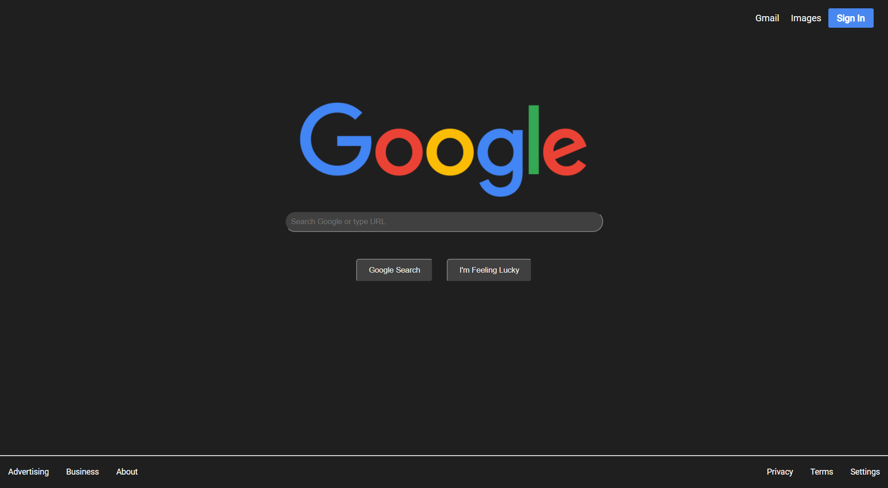
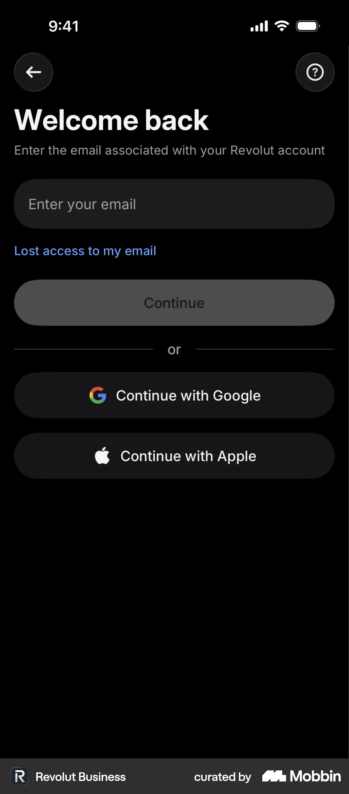

Oryginalna treść i tłumaczenie
EN: Interfaces should not contain information which is irrelevant or rarely needed.
PL: Interfejsy nie powinny zawierać informacji, które są nieistotne lub rzadko potrzebne.
Przykład ze strony internetowej

Źródło: Devpost – redesigned Google homepage
Przykład z aplikacji mobilnej

Źródło: Mobbin – Revolut login screen